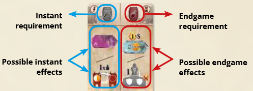

Note
We all play different familys in Florence that are accusing sinners and sending them to Hell. Once they’re in hell, we will make sure the sinners get to their correct circle of hell. You win by getting the most infanmy points. The game was inspired by Dante Alighieri’s Divine Comedy
Gameplay
The game is played over a number of rounds that are made up of 2 phases. The Hell phase, where we move souls though the circles of hell, and the Florence phase, where we move our family members around the city above. The game will end after Dante reaches the final step on his descent into hell.
The main board is split in to 2 parts, Florence above, and Hell below. Below the layers of hell are the sin tracks.
Turn overview
Each turn is divided into 2 mandatory parks.
Hell Phase
You will be leading souls to the same-colored circle of hell for punishment. This earns you infamy points, with higher values the deeper you go.
To move a soul in Hell, you can:
- Move a soul already in hell that has yet to reach the same colored circle. These will be standing up, while souls in their correct cirlce will be laying down
- Take a soul from the graveyard and place it on any sqace in the first circle. To do so, the soul must cross the river and you must pay Charon one Drachma.
If you cannot move any soul in Hell and you have no Drachmas to move one from the graveyard, you must take out a loan to get the money to move a soul across the river.
Loans
- Whenever you need Drachmas, you can take out a loan for infamy points
- Move your boat down one space on the loan track and gain 2 Drachmas
- If your boat passes the instant effect symbol, you immediately lose 5 infamy points
- If you are on the alst space already, don't move your boat but still gain Drachmas and lose the points
- No limit to # of loans, but you will lose points at the end of the game for your position on this track
Soul movement
- Souls can only move along the lines leading form their current space
- If moving to an empty sheild in the next layer down, a souls movement ends
- If a soul would move into a space already occupied, it moves through that space further down, again along the lines
- It is possible to chain several movements this way
- Once a soul reaches its same colored layer, lay it down and gain the points associated with that layer.
- Laid down souls can still be moved through, but they themselves cannot be moved
Wal of dis
- To move from the 5th circle to the 6th cirlce, you must move through the wall.
- To do this, you must have previously placed a safe passage (one of your discs) on the gate of the wall above the destination shield
- Must be your disk, cannot use other players safe passages
Sudden Death
If during the hell phase, you cannot move a soul, the game ends immediately. This is a different endgame trigger that shouldn't come up.
Florence Phase
The Florence section of the board is broken up into different quarters, with two locations in each. The shields in these quarters are the same symbols on all of the hell movements. Whatever symbol the soul you moved in the Hell pahse of your turn ended on is the quarter of the board that you will take your actions in for the Florence phase of your turn. You can bribe Charon 2 Drachmas to take your turn in a different quarter. The different quarters have 2 locations
- Square locations with no access requirement.
-
Rounded locations with access requirements shown in the top left setion of their tiles. To accuse sinners here there must be a guest in your tower who matches the color of that location
-
Send a family memeber to florence
Take a family memeber from your home (not the tower), place it on a location, and perform that location's action. Your family memebers consist of 4 nobles (large meeples) and 4 urchins (small meeples). The nobles start the game on your board, the urchins do not.
- The location must be in the quadrant that matches the symbol where the soul moved in the hell phase ended
Free access locations:
- Haystack (purple)
- Place an urchin from your reserve next to the family member you just placed here
- This is how you get more workers
- Banquet (green)
- Take the next tower floor from your reserve and place it in your tower
- Expanding tower allows more guests, store more barrels, and shelter more family members
- Bank (yellow)
- Receive 2 Florins plus one for each guest (not family member) housed in your tower
- Florins allow you to access some locations or can be converted into Drachmas
- Courtyard (blue)
- Perform up to two optional actions:
- Transfer 1 or 2 of your family members from your tower to your home
- Reorganize your towers: Arrange the guests, barrels and family memebers however you like without adding or removing anything
- Perform up to two optional actions:
Special locations:
- Bonfire (yellow):
- Perform up to 3 optional actions:
- Exhange up to 3 florins for drachmas
- Choose between moving a phlegethon cube one space to the right OR placing a safe passage disc on the wall
- Choose between paying 1 drachma to move a guardian and play its effects OR Pay 2 drachmas and play the river styx to advance on 1 or 2 sin tracks (its own area of the board that lets you remove a number of same colored souls in the graveyard to go up on sin tracks)
- Perform up to 3 optional actions:
- Wall (red):
- Perform up to 3 optional actions:
- Exhange up to 2 florins into drachmas
- Pay 2 drachmas and play a fraud card
- Move a Barrel from your tower to its space on the supply pannel for an instant reward of infamy points based on different criteria
- Perform up to 3 optional actions:
- Market (gray):
- Place a barrel from the market on an empty space in your tower
- You can never have more than one barrel of the same color
- Palace (blue):
- Take a Guest from this location and place them on an empty space in your tower, earning florings equal to the height of the floor (0-4).
- You can only have one guest of each color
- Guests allow you to accuse sinners that match their color
Fraud cards:

- Panel on left is all instant. Requirement to play the card up top (barrel located anywhere), choice of reward on botrtom
- Panel on the right is all endgame. Requirement to score it on top, endgame effects on bottom
- Barrel requirements are just a check, they are not consumed
- When you get the action to play a fraud card, you can play it from your hand or from the lineup, or from the top of the deck. Playing from anywhere but hand requires paying 1 drachma.
-
If you play from hand, draw a new card
-
Accuse a sinner
Each location contains sinners of a specific type. There are no game pieces representing sinners. When one is accused and executed, they turn into a soul, represented by a meeple in the graveyard. Each sin is represented by the same color across the game. - To accuse you must already have a family member at the location where you want to accuse a sinner and meet the requirements of that location - You can only accuse in the quandrant where you finished the hell phase or spend 2 drachma to choose a different quadrant
Steps for accusing
Choose a family memeber at a location and follow these steps in order:
- Move the family memeber who accused to an empty space in your tower. If the accusation was in a special location, send them to the floor where the guest matching that color is housed.
- If you have any other family members in Florence, teturn them to your home.
- Put a soul from the supply of the correct color into the graveyard
- Move your skull up one level on the sin track cooresponding to the color of the moved soul (point out the sin track). Obtain the bonus indicated on the bonus tile to the left of that sin track
-
Move the Dante meeple down a step, activating the reward on his step
- Place a pagan soul (cream) into the graveyard. You may optionally play a guardian
- Play a fraud card
- Award deploma at Dante's current level. THe player with the higest positioned skull on the sin track that matches Dante's current level places a diploma in the diploma area of the same color. In case of a tie, all players do this.
- (last space) Earn 2 points, award the ice blue diploma, proceed to end game
-
Family council
When you have no more family memebers to move to Florence, and you can't accuse a sinner, you must take this action. - Lose 2 infamy points and choose an option: - Move a family member to your home from your tower or a location - Return a guest from your tower to the Palace - Return a barrel from your tower to the Market
ENDGAME
Whenever someone accuses and forces Dante to move to the final step and award the final diploma, that is their last turn. All other players get one final turn.
It is realistic to expect 1/3 of your infamy points from placing souls in hell, and earn 1/3 of your points from diplomas.
POINTS
- Scoring fraud cards
- If you have the barrels end game sides of cards require, activate them
- Adjust river phlegethon score
- cubes will move one space to the left for each empty shield at that level.
- Gain additional diplomas. For every 2 half diploma tokens you have you get to place a dimploma where you don't already have one.
- Score diplomas. Mutiply score on plegethon cube by the level where your skull is. This will provide between 1 to 20 points.
- Repay your loans. Each person loses points indicated on the space where their boat is.